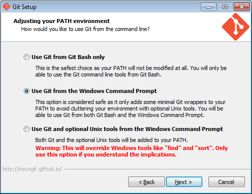
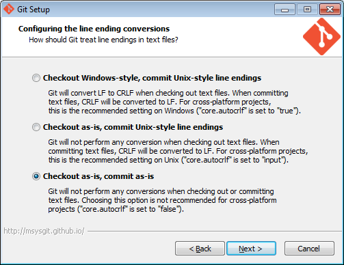
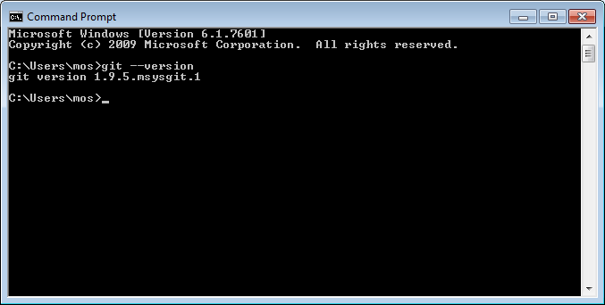

Git och GitHub är två verktyg inom versionshantering som växer i populäritet bland webbutvecklare. Här får du hjälp att komma igång med grunderna till de två populära verktygen. Git är versionshanteringssystemet och GitHub är en webbplats som erbjuder utvecklare att “hosta” sina git-projekt. När de samverkar, eller när du får dem att samverka, ger de en stabil grund för hantering av programvara, som står sig långt in i professionell programutveckling.
Innehållförteckning:
Denna text innehåller följande avsnitt:
Git - ett versionshanteringsverktyg
Om Git
Git är ett versionshanteringssystem utvecklat Linus Torvalds (skaparen till Linux operativsystem). Linus var inte nöjd med versionshanteringsverktygen som använde så han uppmuntrade att de skulle bygga ett eget. Sagt och gjort, Git föddes.
Git är alltså ett verktyg för att konfigurationshantera programvara. Det fungerar bäst att skriva git-kommandon i terminalfönstret. Även om det finns visst stöd via grafiska verktyg så har jag inte sett någon en bra klient, ännu. Därför kör vi i terminalfönster.
Webbplatsen för Git finns här:http://git-scm.com/
På webbplatsen hittar vi dokumentation och en trevlig interaktiv testapplikation som kan hjälpa dig att komma igång med Git.
Lär dig Git med en interaktiv övning på 15 minuter.http://try.github.com/
Okej, så långt allt bra, låt nu oss börja med att installera Git på vår egen maskin.
Installera Git
Börja med att ladda ned och installera programvaran för Git:http://git-scm.com/download
Följande video visar hur du gör:
Ett litet tillägg till videon ovan (när du installerar på windows):
Sen videon gjordes verkar det ha kommit en ny version med en liten inställning vid installationen. Klicka dig fram (som vanligt) tills du kommer till dialogrutan:
Se till att mittenvalet är gjort i första dialogen, du måste kunna använda Git från terminalen `cmd.exe`.
I nästa ruta så skall du välja det sista valet som inte gör någon automatisk påverkan på dina filer.
Testa installationen
Testa installationen genom att köra följande kommando i din cmd.exe.
$ git --version
Kommandot Git ska nu finnas med i pathen och kunna köras från cmd.exe. Så här kan det se ut: 
Så! Då ska allt funka!? När Git är installerat kan vi skapa ett repository.
Ditt första repository
Det allra första vi gör är att konfigurera vem du är som användare.
git config --global user.name "Kalle Anka" git config --global user.email "kalle@home.se" git config --list
Ett Git repository är en katalog som hanteras av Git. Låt oss skapa ett litet testprojekt som vi initierar i Git. Följande kommandon hjälper oss med det.
mkdir hello cd hello git init touch hello.php touch README.md git add . git status git commit -m "Initial commit"
Du kan se hur man gör i den här videon:
Nästa steg får bli att koppla ihop repositoryt med webbtjänsten GitHub.
Får du varningar om “LF replaced with CRLF”?
Det beror på att git automatiskt översätter mellan Windows och Unix radbrytningar. Om du kör git add . och får upp lite obskyra varningar om att att LF ersätts med CRLF och inte förstår vad det betyder. Så handlar det om är att windows och unix har olika sätt att hantera slutet på rader. Windows använder något som kallas Carriage Return (CR) och Line Feed (LF) vilket blir CRLF. Unix använder enbart LF.
Det är alltså inte något fel i sig, utan bara ett meddelande om att viss konvertering kommer ske. De flesta texteditorer har stöd för detta, vilket är anledningen till att det inte dök upp i videon ovan. Om du anänder t.ex. jEdit som tydligen inte har stöd för automatiskt konverterig så kan om du vill kan du stänga av varningarna med: git config core.autocrlf false
GitHub - en webbtjänst för att lagra och publicera repon
GitHub är en webbtjänst som ger dig möjlighet att lagra Git-repo på deras servrar. Det är ett trevligt webbgränssnitt och många stora öppna källkodsprojekt använder sig av GitHub.
Överför från Git till GitHub
Det vi skall göra nu är att skapa ett konto på GitHub och därefter länka samman vårt nyskapade lokala repo så att det hamnar på GitHub.
Du kan följa med hur man gör i följande video:
De magiska orden som länkar ihop ditt lokala repo med ett repo på GitHub är alltså:
git remote add origin https://github.com/dbwebb/hello git push -u origin master
Bugg i Git Windows 1.8.5
När man pushar ett repo över https så fungerar inte interaktiv inloggning, man “promptas” inte för lösenord och användare. Använder man ssh-nycklar är det inget problem, annars behöver man nedgradera till version 1.8.4.
git --version
Skapa sedan om ditt repository från början.
Nu har vi skapat ett repo som finns på GitHub. Bra, då kan vi börja jobba på riktigt.
Jobba i det lokala repot och uppdatera GitHub
Committa och pusha
Nu har du ditt lokala repo som du kan utveckla i. Så fort du gjort några ändringar så kan du göra push på dem till github enligt följande.
git commit -a -m "Explain what changes I did" git push
Du kan committa en specifik fil, commit README.md, eller alla filer som har ändringar i sig, commit -a. En commit görs till ditt lokala repository.
När du sedan gör en git push så laddas de ändrade filerna upp till GitHub.
Sedan är du i synk, dina ändringar i ditt lokala repo matchar repot på GitHub. Det är viktigt att hålla ordning så att GitHub är i synk med din lokala variant.
Ny default-inställning för Git-push från och med version 2.0
Det är enkelt att använda git push. Men från och med version 2.0 av Git så kan det krävas att du behöver göra en default-inställning.
git config --global push.default simple
Läs mer på manualsidan för git-config (sök på push.default)
Tagga
När du har gjort en del ändringar så vill du troligen skapa en ny version av din kod, en version som du vid behov kan gå tillbaka till. Detta gör du genom att sätta en tag med Git.
Följande kommandon lägger till en tagg och pushar den till GitHub.
git tag -a v0.1 -m "Descriptive text about the tag" git push --tags
Följande video visar hur man kan göra:
Backa till en specifik tagg
För att se en lista på alla dina taggar skriver du:
git tag
För att backa tillbaka till en specifik tagg (eller branch/commit id) gör du:
git reset--hard tagtext
Git reset utan --hard återställer commit-historiken men inte filerna. Med --hard återställs filerna också (så vill du förmodligen ha det).
För att rulla tillbaka läget på GitHub (till samma läge som du backat till på ditt lokala repo) skriver du:
git push namnetPåDittRepo -f
Clona ett repot till egen dator eller till en driftsserver
Nu när repot finns på GitHub så är det enkelt för en och var att ladda ned sin egen kopia av det. Det magiska ordet heter clone.
Vill man senare ladda ned den allra senaste varianten så görs det med pull.
Följande kommandon används:
git clone https://github.com/dbwebb/hello git pull # hämta ned senaste ändringarna från repot på GitHub
Videon här visar hur man gör:
Läs gärna mer i manualen om respektive kommando:
Avslutningsvis
Nu har du kommit igång med både Git och GitHub. Som du säkert förstår så är detta bara grunderna och det finns mycket att lära sig om både Git och GitHub. Men, nu har du iallafall en bas att jobbar vidare ifrån.Lycka till och kämpa på!
Dagens lästips är manualen för Git.
När du blir varm i kläderna så kommer du att vilja sätta upp ssh-nycklar så att du slipper skriva lösenordet varje gång. Läs gärna på om hur du sätter upp ssh-nycklarna på GitHub (här nedan). Men det kan upplevas lite pilligt, när du gör det första gången...
Slippa inloggning
Så du är lat och vill slippa skriva in användarnamn och lösenord vare gång (bra!). Här hittar du in instruktion för hur du slippper det.